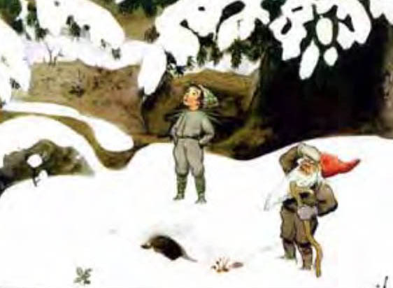
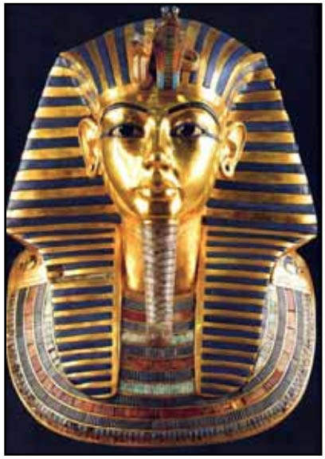

It all began in a dream telepathy contest, where strange – stranger-than-usual – things happened.
It was 2006, my first year attending the International Association for the Study of Dreams (IASD) annual online PsiberDreaming Conference (PDC), which always includes psi dreaming contests. For this one Beverly D'Urso was “sender,” endeavoring to mentally transmit a target image. We contestants were to post our dreams online; when four pictures were posted we'd each choose which best matched our dream; then judges would select winners with the best “hits.”
On the designated night I took off flying and called out, “Beverly, show me the picture!” I found myself “flying over a snowy scene.... A stretch of bare soil... a very large dog appeared.... Another smaller, darker dog was with him... possibly rescue dogs.... Suddenly I was indoors looking at and hearing an announcement of the answer... pictures of different types of dogs.”
Mary Pat posted her dream just after mine: hers had “reindeer with red leather harnesses... intense cold, rounded hills of snow and ice....” and then, “the image of a dog, nothing else, the background dark.... I realized he was a husky....”
At least four others dreamed of snow. Bob dreamed of a snowball fight, then twice of dogs: one on a bed with him, one on the bedroom floor. Val dreamed her parakeet was “the size of a large dog”!
When the four picture were posted, surprisingly, none had a dog. But one was a scene of snow and bare ground – with two elves looking up into pines: a young one in a gray jumpsuit, a scowling older one in a red pointed cap. Had anyone dreamed the elves?
Yes! Sonia's dreams had a boy in a gray jumpsuit; B.A.'s, a boy, then “a red triangular shape.” Dolores dreamed of two dwarves in pointed red caps. Ilkin got the facial expressions: “Grumbling/curious.... Looking for something.... Snow.” Patricia dreamed of elves sheltering in a tree from a storm; “the dog alerts them....”
Some dreamed evergreens and Christmas scenes. It was like putting together a puzzle. Indeed Ed, an experienced psi dreamer, dreamed that he failed to solve a blue and white interlocking puzzle on a white countertop. He correctly took this as a clue that the dreams of snow were better “hits” than his!
We were delighted when Beverly revealed the target: the elves-in-snow. Then she posted her own dreams from her night of “sending,” including this: “Extremely large dog... climbed into this little bed with me. I was saying, 'No, no, no....'”!
So where did all the dogs come from?
Finally Suzanne disclosed that, the same night, she'd also participated in another dream psi experiment. The target? A team of sled dogs in the snow!

Discovering these and other complex interconnections unfolded an extraordinary camaraderie. Kathy posted that she was “impressed with the way people are dreaming together – we seem to have woven a tight fabric of related dreams in the last 24 hours: a harmonious dream song....”
I agreed. “What an experience – tuning into shared dream-space with not only Beverly but, as it turns out, all who participated.... Everybody wins by participating and experiencing our connectedness. There could be no greater reward.”
The judges deliberated an extra day, citing “the strange and wonderful things that happened,” then gave ties for first, second and third with a flock of honorable mentions.
I posted, “It was difficult to evaluate my own dreams' relation to the target without looking at everyone else's. Think how fun and rewarding it would be if that were the object of the game! – especially if choosing among possible targets as in [this] contest – treat it as a group dream and say, for instance, “Wow, there's a lot of snow in here! …And look at all the elves. I vote #1 is the target.”
Six years later I helped create just such an event for the 2012 PDC. The Group Remote Viewing Game proved a splendid test of the hypothesis that a group can work together to generate dream clues, then solve a mystery.
But I've told that story elsewhere (IASD's Dream Time magazine). Here, let's play with a less-testable idea: Do people dreaming toward a common goal form something like a group mind?
The target: King Tutankhamun's golden funerary mask.

The dreams: multiple puzzle pieces, including two or more of each of the following: ancient cities, artifacts, the Middle East, rulers, spiritual figures, temples, ceremonies, statues, portraits, boxes, graves, dimly-lit rooms, mummy-like wrappings, gold – lots of gold. And there were surprising mirrorings in ways dreaming minds interpreted these themes. A few among many oddly intersecting dreams that pointed to the target:
Dale dreamed, “I am traveling to a remote place where I witness some type of ceremony inside a building... possibly a communion.” Jay dreamed “a single image. A flat smooth shiny green leather case... containing a shiny metal plate (paten) with a single large communion host on it.”
Sarcophagus-like, the case holds what many Christians call the body of Christ, considered – as Egyptians considered the Pharaohs – both God and man. But why green? Perhaps because Rita was dreaming of a “magical/mystical... green box”?
Rita also dreamed of a golden “statue of the Mary, the Madonna” while Valley was dreaming of “the embodiment of Mary [with] large dark living eyes.”
No one dreamed “Egypt,” but Carol dreamed initials UR and thought of the ancient Mesopotamian city, while Kate dreamed “a repeating motif of blue and aqua” reminding her of "the detail work on an ancient frieze from Mesopotamia.”
Kate had apparently zoomed in on the mask's lapis lazuli and turquoise inlays. It also has alternating blue and gold stripes; Sharon dreamed gold stripes on a gold-framed portrait of a revered and famous man, while Ed dreamed blue stripes on the head of a powerful, reclining magician.
Now here's another unscientific notion. When people dream together, does the waking world collaborate?
Maria recounted her experience on the night designated for dreaming the target. “I have a model of Tut's sarcophagus [that] toppled over that evening for no apparent reason, obliging me to take notice of it as I set it right again....”
Carol was deliberating which image best matched the group's dreams when when “out of nowhere” an acquaintance told her, “Maybe you were a pharaoh's daughter in a past life.... I thought of you last night when I turned on a movie and watched The Mummy Returns!”
When I revealed the target, Kate was listening to a presentation on her iPod. “The presenter started talking (out of the blue) about Egypt, pharaohs, and how people had said Obama looks like a pharaoh.”
And at that moment Carol heard “Walk Like An Egyptian” on the radio.
A few participants' closing remarks:
Sharon: “So glad we all did what we did together. It does work....”
Maureen: “It's nice to feel that the combined vision, the pieces of the puzzle that each dreamer contributed, each in his or her own way – really made this event work.... I'm very, very impressed with the success of this event and the rich psi content of the dreams....The communal focus felt extraordinary to me.”
Laurel, quoting Martin Luther King, Jr.: “'We must give an overriding loyalty to mankind as a whole in order to preserve the best in our individual societies.' Seems like this game has been an excellent example of a group coming together in this way.”
Tony: “It's been a lot of fun and left me with a very strong feeling of – what's next!”